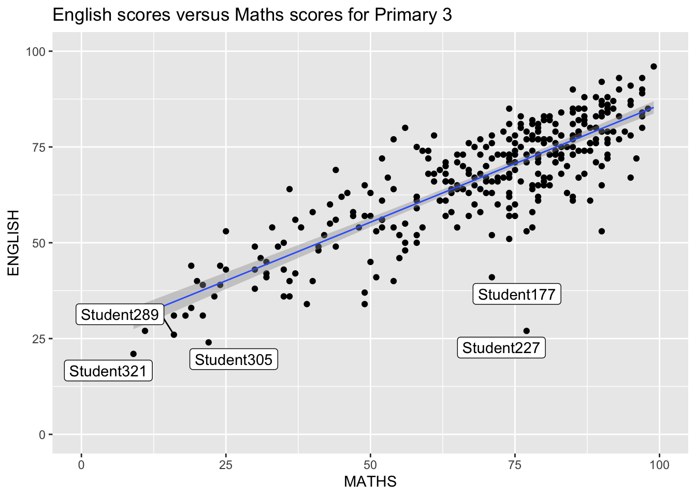

pacman::p_load(ggrepel, patchwork,
ggthemes, hrbrthemes,
tidyverse) Hands-on Exercise 2
Beyond Basic ggplot2 Fundamentals
In this exercise, we will move beyond basic ggplot2 usage to examine its more advanced capabilities, focusing on techniques to create more sophisticated and informative visualizations
Pre-Work
Before we dive into the advanced ggplot2 techniques, we need to ensure that the required R packages are installed and loaded into our working environment. We’ll use the `pacman` package for this, which simplifies the process of managing R packages.
We have imported the `Exam_data.csv` dataset, which contains information about student exam scores. Here’s a brief overview of its structure:
Code
exam_data <- read_csv("~/Documents/SMU/April Term 2/Visual Analytics/patriciatrisno/ISSS608-VAA/Hands-on_Ex/Hands-on_Ex02/data/Exam_data.csv")Review! From Hands-on Exercise 1, we have learned:
How to use the `pacman` package (specifically the `p_load()` function) to efficiently check for the presence of and load essential R packages, particularly the `tidyverse` suite, which includes `ggplot2`.
Importing data into R using functions like `read_csv()` from the `readr` package.
Plotting a Simple Bar Chart using `ggplot2`.
Defining the aesthetic mappings `aes()`.
Adding a geometric object `geom_bar()` to represent the data as bars.
Beyond Basic ggplot2 Annotation with ggrepel
Annotation: the process of adding extra layers of information or context directly onto the plot
Handling Overlapping Labels in Scatter Plots
When dealing with scatter plots containing a large number of data points, labeling each point directly can lead to significant visual clutter, making it difficult to read the plot. The `ggrepel` package provides a powerful solution to this problem.
What is ’ggrepel`?
`ggrepel` is an extension of the popular `ggplot2` package in R. It offers specialized geoms (geometric objects) specifically designed to intelligently position text labels around data points in your ggplot2 visualizations. The key feature of these geoms is their ability to “repel” overlapping text labels, ensuring that each label is clearly visible without obscuring other labels or the data points themselves.
Key Benefits of Using `ggrepel`
Improved Readability: By preventing text overlap, `ggrepel` makes the plots much easier to interpret, especially when dealing with dense datasets.
Clear Association: The repelling algorithm ensures that each label remains visually associated with its corresponding data point, often using connecting lines if necessary.
Customization Options: `ggrepel` provides a range of arguments to fine-tune the appearance and behavior of the labels, such as the force of repulsion, the direction of movement, and the styling of connecting lines.
Seamless Integration with ggplot2: As an extension of `ggplot2`, `ggrepel`’s geoms (`geom_text_repel` and `geom_label_repel`) are used in the same way as standard ggplot2 geoms, making it easy to incorporate into your existing plotting workflows.
Below, we will see how `ggrepel` can be used to effectively label points in a scatter plot without the issue of overlapping text, leading to a much cleaner and more informative visualization.
Original Plot with Overlapping Labels
Code
ggplot(data=exam_data,
aes(x= MATHS,
y=ENGLISH)) +
geom_point() +
geom_smooth(method=lm,
size=0.5) +
geom_label(aes(label = ID),
hjust = .5,
vjust = -.5) +
coord_cartesian(xlim=c(0,100),
ylim=c(0,100)) +
ggtitle("English scores versus Maths scores for Primary 3")
Figure: 1
Insights:
In this initial scatter plot, each data point representing a student’s Maths and English scores is labeled with their unique ID. However, due to the relatively large number of data points concentrated in certain areas of the plot, there is significant overlap of the labels. This overlapping makes it difficult to clearly identify each point and read its corresponding ID, ultimately hindering the interpretability of the visualization. The clutter caused by the overlapping labels obscures the underlying distribution of the data.
Improved Plot using geom_label_repel()
To address the issue of overlapping labels, we can utilize the geom_label_repel() function from the ggrepel package. This geom intelligently repositions labels to minimize overlap, making the plot much cleaner and easier to read.
Code
ggplot(data=exam_data,
aes(x= MATHS,
y=ENGLISH)) +
geom_point() +
geom_smooth(method=lm,
size=0.5) +
geom_label_repel(aes(label = ID),
hjust = .5,
vjust = .5) +
coord_cartesian(xlim=c(0,100),
ylim=c(0,100)) +
ggtitle("English scores versus Maths scores for Primary 3")
Figure: 2
Note: The geom_label_repel() function has its own internal logic to position labels in a way that minimizes overlap. While we have retained the hjust and vjust arguments here to provide an initial nudge to the label positions, geom_label_repel()will further adjust these positions to avoid collisions with other labels and data points.
Easier Summary: The hjust and vjust arguments in geom_label() offer more manual control over the initial placement of labels. In contrast, geom_label_repel() employs an automatic algorithm to strategically position labels, effectively preventing them from overlapping and enhancing the readability of the plot.
Insights:
By using geom_label_repel(), the labels are now intelligently distributed around the data points. This significantly reduces the visual clutter and makes it much easier to associate each label (student ID) with its corresponding position on the scatter plot. The underlying patterns and the relationship between Maths and English scores become clearer as the labels no longer obscure the data. While some labels might be slightly further from their points with connecting lines, the overall readability and interpretability of the plot are greatly improved, especially in dense areas of data.
Beyond Basic ggplot2 Themes
Designing better Visualization
In addition to the fundamental geoms and aesthetics, ggplot2 provides built-in themes to control the overall visual appearance of the plots. The built-in themes include: theme_gray(), theme_bw(), theme_classic(), theme_dark(), theme_light(), theme_linedraw(), theme_minimal(), and theme_void().
more detailed information about these built-in themes : https://ggplot2.tidyverse.org/reference/ggtheme.html
Below we will create a simple histogram showing the distribution of Maths scores from our `exam_data` dataset and see how applying different themes can affect its appearance.
Code
ggplot(data=exam_data,
aes(x = MATHS)) +
geom_histogram(bins=20,
boundary = 100,
color="grey25",
fill="aquamarine2") +
theme_light() +
ggtitle("Distribution of Maths scores") 
Figure: 3
Using theme_light()
The theme_light() applied here provides a clean and readable background with subtle grid lines, making it easier to focus on the distribution of the data.
This histogram visually represents the frequency distribution of Maths scores among the students in our dataset. Each bar represents a bin of scores, and the height of the bar indicates the number of students whose scores fall within that bin.
ggtheme package
There is also a package called ggthemes that provides additional ‘ggplot2’ themes that replicate the look of plots from various sources and styles. This package extends the theming capabilities of ggplot2, allowing us to adopt the visual aesthetics of well-known publications, software, and even color palettes. Such as:
The Economist: theme_economist()
Wall Street Journal: theme_wsj()
Excel: theme_excel()
Tufte’s minimalist style: theme_tufte()
Stata: theme_stata()
Solarized color scheme: theme_solarized()
etc.
Applying a `ggthemes` Theme: The Economist Example
By simply adding + theme_economist(), the histogram’s appearance is transformed to resemble the characteristic style of The Economist, often featuring a distinct font, background color, and grid line style.
Code
ggplot(data=exam_data,
aes(x = MATHS)) +
geom_histogram(bins=20,
boundary = 100,
color="grey25",
fill="aquamarine2") +
ggtitle("Distribution of Maths scores") +
theme_economist()
Note Use vignette to shows practical examples of how to use these special geoms and scales to enhance our themed plots.
Figure: 4
hrbthems package
The hrbrthemes package offers pre-designed ggplot2 themes with a strong emphasis on typography. These themes carefully manage font choices and the positioning of labels (like axis titles and tick labels) to ensure our plots are not only visually appealing but also highly readable.
Before Applying hrbrthemes
Code
ggplot(data=exam_data,
aes(x = MATHS)) +
geom_histogram(bins=20,
boundary = 100,
color="grey25",
fill="aquamarine2") +
ggtitle("Distribution of Maths scores") +
theme_ipsum()
Figure: 5
After Applying and Customizing theme_ipsum():
Code
ggplot(data=exam_data,
aes(x = MATHS)) +
geom_histogram(bins=20,
boundary = 100,
color="grey25",
fill="aquamarine2") +
ggtitle("Distribution of Maths scores") +
theme_ipsum(axis_title_size = 18,
base_size = 15,
grid = "Y")
Figure: 6
within the theme_ipsum() theme, we can control:
axis_title_sizeargument can adjust the size, make it smaller or largerbase_sizeargument used to increase the default axis (overall text size)gridargument is used to fine-tune visual elements like grid lines.grid = "Y"will show only vertical grid linesetc.
Beyond Single Graph
It’s often necessary to display multiple graphs together to tell a complete visual story, allowing for comparisons, highlighting relationships, or showing different facets of the data.
While, ggplot2 extensions also provide powerful functions for creating these composite figures by combining multiple individual ggplot2 plots. Here, we’ll focus on the `patchwork`package, which offers an intuitive and flexible way to arrange and combine plots.
Composite Graphic - Patchwork Methods
Preparing the Individual Plots
Code
p1 <- ggplot(data=exam_data,
aes(x = MATHS)) +
geom_histogram(bins=20,
boundary = 100,
color="grey25",
fill="aquamarine2") +
coord_cartesian(xlim=c(0,100)) +
ggtitle("Distribution of Maths scores")
p2 <- ggplot(data=exam_data,
aes(x = ENGLISH)) +
geom_histogram(bins=20,
boundary = 100,
color="grey25",
fill="aquamarine2") +
coord_cartesian(xlim=c(0,100)) +
ggtitle("Distribution of English scores")
p3 <- ggplot(data=exam_data,
aes(x= MATHS,
y=ENGLISH)) +
geom_point() +
geom_smooth(method=lm,
size=0.5) +
coord_cartesian(xlim=c(0,100),
ylim=c(0,100)) +
ggtitle("English scores versus Maths scores for Primary 3")Combining Plots with patchwork
The patchwork package provides a simple and expressive syntax for combining ggplot2 plots. Its core idea is to use arithmetic operators to arrange plots in different layouts.
Here’s a summary of the basic syntax:
+(Plus): Places plots side-by-side in a row./(Slash): Places plots on top of each other in a column.|(Pipe): Combines layouts created with+and/.()(Parentheses): Groups sub-layouts, allowing for more complex arrangements.
Combining Two ggplot2 Graphs
To arrange p1 and p2 in a single row with two columns, we can use the + operator:
Code
p1 + p2
Figure: 7
Combining Three ggplot2 Graphs - Row and Column Layouts
To create a more complex layout with p1 and p2 in a column on the left and p3 on the right, we can use a combination of /and |:
Code
(p1 / p2) | p3
Figure: 8
Creating Figure with Insert
patchwork also allows us to place one or more plots or graphic elements freely on top of another plot using the inset_element() function. This is useful for adding smaller, more detailed views or contextual information to a main plot.
Example: Inserting the English score histogram (p2) into the bottom left corner of the scatter plot (p3), using inset_element():
Code
p3 + inset_element(p2,
left = 0.02,
bottom = 0.7,
right = 0.5,
top = 1)
Figure: 9
Note: The left, bottom, right, and top arguments specify the relative position of the inset plot within the main plot’s coordinate system.
Applying Themes to Composite Figures
We can apply a ggplot2 theme to an entire composite figure created with patchwork to ensure a consistent visual style across all the combined plots.
For example, to apply the theme_economist() from the ggthemes package to the combined plot (p1 / p2) | p3, we will use the & operator:
One of the powerful aspects of using `patchwork`is to combine ggplot2 plots is its seamless integration with other ggplot2 extensions, including theming packages like `ggthemes`. This allows us to apply a consistent visual style to an entire composite figure, ensuring that all the individual plots within it adhere to a unified aesthetic.
To apply a` ggtheme to a composite plot created with `patchwork`, we can simply use the `&` operator after constructing your combined plot layout.
Code
patchwork <- (p1 / p2) | p3
patchwork & theme_economist()
Figure: 10
This will apply The Economist theme to all three plots in the composite figure, overriding their individual themes (if any) and giving the entire visualization a consistent and polished look.
Further Improvement
Throughout this exercise, we’ve explored various techniques to enhance our ggplot2 visualizations, from handling label overlap with ggrepel to applying consistent themes across multiple plots using patchwork and ggthemes. However, even with these improvements, we can still identify areas for further refinement to achieve even clearer and more polished visuals.
Looking specifically at Figure 10, which demonstrates the combination of plots with patchwork and the application of a ggtheme, we can observe several potential issues:
Alignment of Graphs and Annotations: The visual alignment between the individual graphs within the composite figure and any accompanying annotations (like titles or legends) might not be perfectly synchronized, leading to a slightly disjointed appearance.
Overlaps within Annotations: While
ggrepelhelps with data point labels, overlaps could still occur within other annotation elements, such as long titles or legend text, depending on the chosen theme and the content.Inconsistent Spacing: The spacing between the individual graphs within the
patchworklayout, as well as the distance between the graphs and the legend (if present), might not be optimal or consistent, potentially making the overall figure feel less balanced.Inconsistent Title Case: As noted, the capitalization of titles across the different plots within the composite figure might not be uniform (e.g., some in sentence case, others in title case), which can detract from the professional look of the visualization.
To address these potential areas for improvement, we can explore further customization options within both patchworkand the chosen ggtheme.
References:
Wickham, H. (2016). ggplot2: Elegant Graphics for Data Analysis. Springer-Verlag New York.
Rudis, B. (2020). hrbrthemes: Opinionated, Minimal Themes for ggplot2 (R package version 0.8.0).